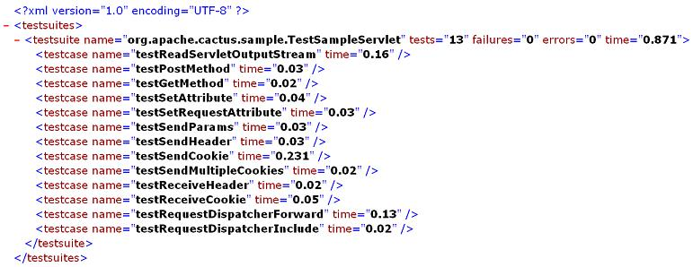
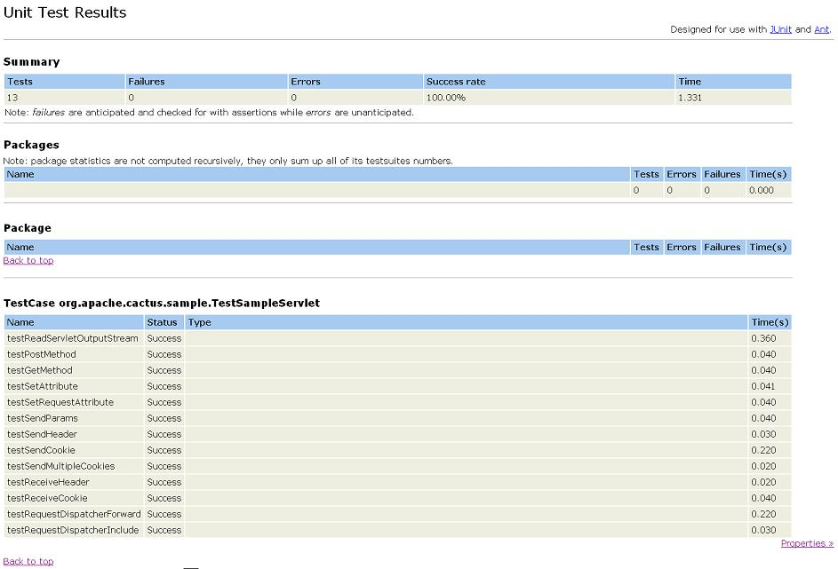

|
Last update : August 31 2002
Doc for : v1.4.1
About
What is Cactus ?
News
Changes
Features/Status
Goals
Roadmap/Todo
Contributors
Contributing
Cactus Users
Tested on ...
License
Downloads
Downloads
Documentation
How it works ?
Getting Started
Mock vs Container
Javadocs
FAQ
Howto Guides
Classpath Howto
Config Howto
Migration Howto
TestCase Howto
Jsp Howto
Runner Howto
Security Howto
Ant Howto
HttpUnit Howto
Sample Howto
EJB Howto
IDE Howto
Tomcat Howto
JUnitEE Howto
Support
Bug database
Mailing list
Misc.
Why the name ?
Logo Challenge
Resources
Test Coverage
Stats
Developers
CVS
Coding Conventions
Build results
Release Checklist
|
| Starting Cactus tests |
The Cactus tests are started using a JUnit Test Runner. There are
several configurations for executing these test runners :
|
| Running Cactus tests from Ant |
Refer to the Ant Howto.
|
| Running Cactus tests from the command line |
You need to set up your classpath in the same way as when you run
Cactus tests from Ant. However, you start the test with the following
command line (this is an example using the Swing UI TestRunner found
in the junit jar) :
junit.swingui.TestRunner.main [test case class]
|
| Running Cactus tests from an IDE |
Refer to the IDE Howto.
|
| Running Cactus tests from a browser |
 |
This section only applies for Cactus 1.4 and greater.
|
| Step 1 : Setting up the classpath |
In order to run Cactus tests from a browser you need to have a webapp
containing your classes to test and your test classes. In addition,
both Cactus client side and server side jar classes must be able to be
loaded from your webapp (i.e located in your WEB-INF/lib
directory or in a location available through your container Context
class loader (refer to your container documentation).
|
| Step 2 : Mapping the Cactus Servlet Test Runner |
Then, in addition to the Cactus redirectors that you have mapped in
your web.xml (see the
Configuration howto), you also
need to map the Cactus Servlet Test Runner, as follows :
[...]
<servlet>
<servlet-name>ServletTestRunner</servlet-name>
<servlet-class>org.apache.cactus.server.runner.ServletTestRunner</servlet-class>
</servlet>
[...]
<servlet-mapping>
<servlet-name>ServletTestRunner</servlet-name>
<url-pattern>/ServletTestRunner</url-pattern>
</servlet-mapping>
[...]
|
|
| Step 3 : Executing the tests |
Open a browser and type http://server:port/mywebapp/ServletTestRunner?suite=mytestcase
where :
-
server:port is the name of your server machine and
port on which your container is running
-
mywebapp is the name of your webapp (usually the name
of your war file)
-
mytestcase is the fully qualified name (i.e. with
packages) of your TestCase class containing a
suite() method listing all the tests, in standard
JUnit fashion.
Here is an example of what you will get :

Ok, that's nice ... But what if I want HTML instead of XML ? Don't
worry there is a solution. Grab the following
stylesheet
used to format JUnitReport Ant task results and drop it in your
webapp and name it junit-noframes.xsl (in the root
directory for example). Then, open a browser and type
http://server:port/mywebapp/ServletTestRunner?suite=mytestcase&xsl=junit-noframes.xsl.
You should see the following :

|
This will work with Internet Explorer as the XSL transformation is
performed on the client side (i.e by the browser). I'm not sure
about other browsers.
|
|
|
|
|